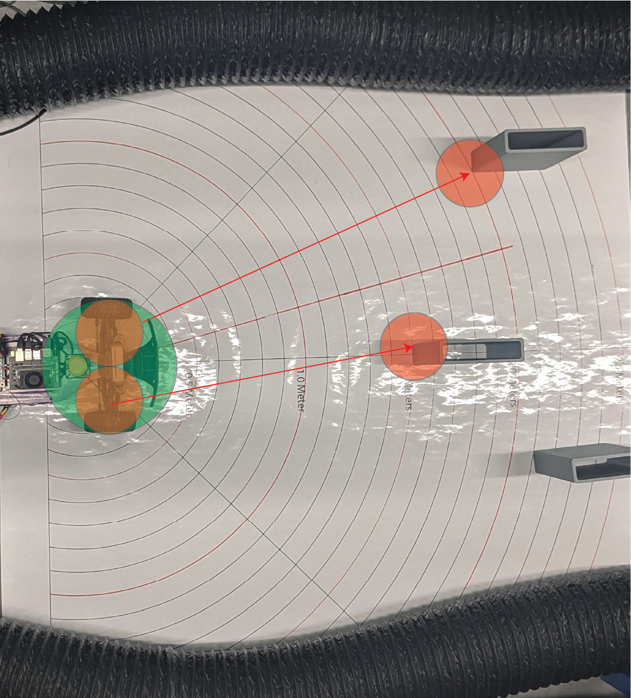

Obstacle Masking: Creating a Safety Bubble¶
Before we find gaps to drive through, we must ensure that the robot doesn’t hit obstacles. We create a Safety Bubble — an area around the closest detected object where driving is not allowed.


🛠 Why Create a Safety Bubble?¶
The car needs clear space to steer safely.
Obstacles might not be exactly at one point — their edges could extend sideways.
Sensors have small errors, so being conservative around obstacles improves safety.
✅ By removing all directions near obstacles, we only drive through clean, safe spaces.
📈 What the Data Looks Like¶
Imagine your LiDAR scan (distances around the robot) like this:
[2.5m, 2.5m, 0.6m, 0.6m, 2.5m, 2.5m]
The 0.6m values indicate a close obstacle.
We create a bubble around it by setting nearby points to zero.
After applying the safety bubble:
[2.5m, 0.0m, 0.0m, 0.0m, 2.5m, 2.5m]
Now we clearly cannot steer toward the obstacle!
✏️ Safety Bubble Method (Skeleton Code)¶
def create_safety_bubble(self, ranges, bubble_radius):
"""
Masks out a 'bubble' around the closest obstacle in LiDAR data.
Args:
ranges (np.array): Preprocessed LiDAR distances
bubble_radius (float): Radius of safety bubble (meters)
Returns:
np.array: Updated ranges with obstacles masked
"""
closest_idx = np.argmin(ranges) # Find the nearest object
closest_dist = ranges[closest_idx]
if closest_dist == 0.0:
return ranges # No need to create a bubble if no valid close point
bubble_angle = math.atan(bubble_radius / closest_dist) # Calculate angle span of the bubble
bubble_points = int(bubble_angle / self.angle_increment) # How many LiDAR points wide the bubble is
start_idx = max(closest_idx - bubble_points, 0)
end_idx = min(closest_idx + bubble_points, len(ranges) - 1)
# Set the bubble area to obstacle (zero)
ranges[start_idx:end_idx + 1] = 0.0
return ranges
⚙️ How It Works Step-by-Step¶
Step |
Action |
|---|---|
Find the closest detected object. |
|
Calculate how many degrees (or LiDAR points) the bubble should cover. |
|
Mask out all points in that range by setting them to zero. |
|
Treat zeroed points as unsafe directions during gap finding. |
🧠 Why Mask Points to Zero?¶
Zero = obstacle in later steps.
When finding free space, we only look at non-zero points.
Simple, fast, and reliable method for safe navigation.
🚀 Key Parameters¶
Parameter |
Meaning |
Recommended Value |
|---|---|---|
|
Radius of safety margin (meters) |
0.3m – 0.5m depending on robot size |
✅ Larger robots need larger bubbles!
📚 Summary¶
Obstacle masking protects the vehicle from driving dangerously close to obstacles.
A safety bubble around the nearest obstacle creates a clear zone of avoidance.
This step is critical before detecting the largest navigable gap.
✅ Always apply the safety bubble before finding free space!